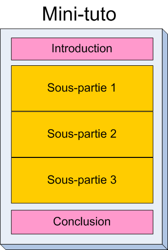
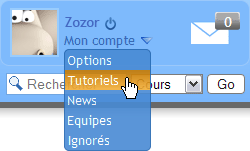
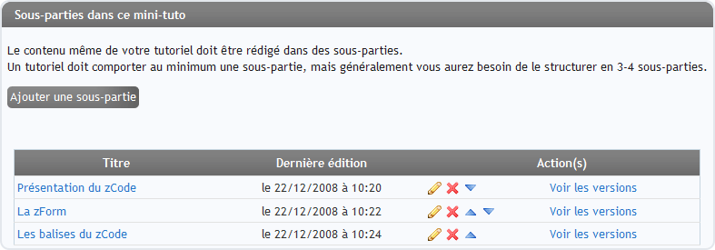
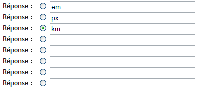
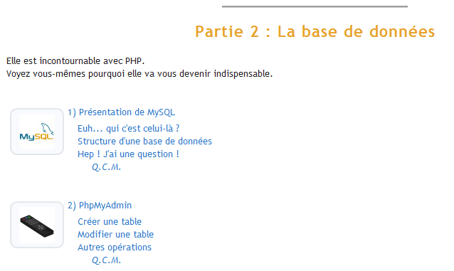
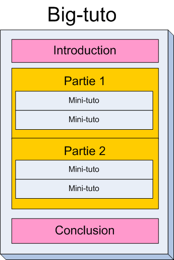

Le Site du Zéro vous propose des cours, aussi appelés "tutoriels". Vous pouvez donc venir sur le Site du Zéro pour lire ces tutoriels... Mais vous pouvez aussi vous transformer en "Rédacteur de tutoriels" et ainsi enseigner à votre tour de nombreuses choses aux autres Zéros !
Le Site du Zéro vous donne justement tous les outils pour rédiger des tutoriels. L'outil d'édition de tutoriels, appelé "Vos tutos", est très complet. J'ai rédigé ce tuto pour que tout le monde sache s'en servir correctement et arrive à en tirer le meilleur parti :)
Il s'agit donc du premier tuto au monde sur... "Comment créer un tuto" :p
Vous pouvez créer 2 types de tutos :
Les mini-tutos : des tutos courts d'une page, comme celui-ci
Les big-tutos : des tutos plus importants, comportant plusieurs chapitres, comme le tuto PHP du Site du Zéro
Nous allons voir comment rédiger ces 2 types de tutoriels, puis je vous donnerai quelques conseils pour augmenter vos chances de voir votre tuto accepté sur le Site du Zéro :)
Vous en avez un sous les yeux :p Ce tuto est un mini-tuto. Comme vous le voyez, un mini-tuto tient sur une page. Cela ne veut pas dire que votre mini-tuto doit être court, vous pouvez bien sûr faire des mini-tutos assez gros. Toutefois, si ça commence à devenir vraiment trop gros il faudra envisager de faire plutôt un big-tuto, comme on le verra plus tard ;)
Structure d'un mini-tuto
Un mini-tuto est composé :
D'une introduction
D'une ou plusieurs sous-parties
D'une conclusion
Si on fait un schéma d'un mini-tuto, ça pourrait ressembler à ça :

Ici, notre mini-tuto comporte 3 sous-parties. Généralement, la plupart des mini-tutos comporteront 2, 3 ou 4 sous-parties. Si votre mini-tuto est court, vous devez créer au moins une sous-partie.
Les sous-parties sont le cœur de votre tutoriel. L'introduction et la conclusion, en fond rose sur mon exemple, doivent être courtes (quelques lignes maximum). Vos sous-parties seront en revanche bien plus longues.
Créer un mini-tuto
Pour créer un mini-tuto, vous devez tout d'abord être membre du site. Dans le menu "Mon compte", vous avez un lien "Tutoriels". Cliquez dessus.

Le panneau de contrôle
Vous arrivez sur votre panneau de contrôle de tutoriels. De là, vous pouvez :
Ajouter de nouveaux tutoriels
Editer les tutoriels
Voir les tutos en attente de validation par un administrateur
Pour créer un mini-tuto, vous devez cliquer sur le bouton "Ajouter un mini-tuto", comme celui que vous voyez ci-contre. Notez que l'apparence de ce bouton peut changer en fonction du design du Site du Zér0 que vous avez choisi.
La page d'ajout de mini-tuto
Vous voici maintenant sur la page d'ajout de mini-tuto. Cette page vous demande 4 informations, dans l'ordre :
Le titre de votre tuto (obligatoire)
Une icône pour représenter votre tuto : cela peut être n'importe quelle image sur votre disque dur qui fait penser au sujet évoqué dans le tuto.
La difficulté : cela vous permet de spécifier le niveau de difficulté du tutoriel. C'est optionnel, mais vivement recommandé.
L'introduction de votre tuto : rédigez une courte introduction dans le premier champ de zForm.
La conclusion de votre tuto : rédigez une courte conclusion dans le second champ de zForm. Si vous ne connaissez pas encore votre conclusion, laissez cette partie vide. Vous pourrez toujours rajouter une conclusion plus tard.
Voici une capture d'écran des champs demandant le titre et l'icône du tuto :
Une fois que vous avez mis au moins le titre et l'introduction de votre tuto, vous pouvez cliquer sur le bouton "Envoyer" en bas de la page.
La page principale d'édition de mini-tuto
Après avoir cliqué sur "Envoyer", vous arrivez sur la page principale d'édition de votre mini-tuto. Cette page est composée de plusieurs parties. De haut en bas :
Des boutons d'action, notamment le plus important : demander validation de votre tuto. En effet, votre tuto n'est pas visible tant qu'il n'a pas été validé par un "Validateur de tutoriels" (un membre du Site du Zér0 dont le rôle est justement de valider ou refuser les tutoriels)
La liste des sous-parties de votre mini-tuto
La liste des questions du QCM de votre mini-tuto (s'il y en a)
Et enfin, vous retrouvez en bas les mêmes champs que ceux que vous aviez dans la page précédente : titre, icône, intro et conclusion. Pour valider le changement d'un de ces 4 éléments, cliquez sur "Envoyer" tout en bas de la page
La liste des sous-parties
Pour le moment, votre mini-tuto ne comporte aucune sous-partie. La première chose que vous devriez faire maintenant est de cliquer sur le bouton "Ajouter une sous-partie" pour créer au moins une sous-partie dans votre tuto. Vous serez redirigé sur une page où vous pourrez écrire le contenu même de votre tuto. Vous écrirez donc beaucoup plus de choses dans ce formulaire que pour l'introduction par exemple, vu qu'il s'agit là du coeur de votre mini-tuto.
Je l'ai dit, mais je le rappelle quand même : tout mini-tuto doit comporter au moins une sous-partie. Enfin ça, c'est pour les mini-tutos courts. Généralement, un mini-tuto comportera 3-4 sous-parties. Prenons par exemple mon tuto "Bien utiliser le zCode" :

Comme vous le voyez, mon mini-tuto comporte 3 sous-parties :
Présentation du zCode
La zForm
Les balises du zCode
Il y a un bouton pour éditer chaque sous-partie, la supprimer, la faire monter ou descendre d'un cran. C'est simple à utiliser, je ne m'étends pas là-dessus.
Le Q.C.M.
Chaque mini-tuto peut être doté d'un Q.C.M. à la fin de celui-ci. Les Q.C.M. sont facultatifs. Ils permettent aux lecteurs de votre mini-tuto de se tester et de voir s'ils ont bien retenu la leçon ;) Si votre tuto est simple et court, ce ne sera généralement pas la peine de rajouter des questions de Q.C.M.
L'ajout et l'édition de questions de Q.C.M. fonctionnent de la même manière que les sous-parties : vous pouvez en ajouter, en éditer, en supprimer, les faire monter et les faire descendre.
Intéressons-nous de plus près à l'ajout d'une question. Cliquez sur le bouton "Ajouter une question" qui devrait ressembler à celui-ci :
On vous emmènera sur une page composée de 3 grandes parties :
La question
Les réponses possibles
L'explication de la solution
Vous rédigerez donc votre question puis insérerez plusieurs réponses possibles. Il ne peut y avoir qu'une seule réponse. Vous devez cocher la case devant la bonne réponse pour indiquer à l'ordinateur laquelle de vos réponses est la bonne.
Vous pouvez indiquer de 2 à 8 réponses. Voici un exemple où j'ai mis 3 réponses possibles :

Je laisse vides les champs des réponses que je n'utilise pas. J'ai coché "km" car c'est la bonne réponse à la question.
Enfin, en bas de la page vous avez un champ zForm pour rédiger l'explication de la solution. Cette explication sera affichée après que le lecteur ait répondu juste ou faux, afin d'apporter un maximum d'explications sur la question posée.
Un big-tuto est en fait... une combinaison de mini-tutos :D
Prenons par exemple mon tuto PHP, qui est un big-tuto :

Structure d'un big tuto
Un big-tuto est composé de chapitres. Chaque chapitre est aussi appelé "mini-tuto", ce sont des synonymes dans notre langage tordu :p Lorsque vous créez un big-tuto, vous ne faites qu'assembler des mini-tutos dans un certain ordre !
Sur ma capture d'écran, on voit 2 mini-tutos (= chapitres) :
Présentation de MySQL
PhpMyAdmin
Un big-tuto comporte une introduction et une conclusion (toutes deux doivent être courtes). Un big-tuto est découpé en plusieurs parties, et chaque partie comporte plusieurs mini-tutos.
Schématiquement, ça donne ça :

Un big-tuto est découpé en plusieurs parties, comme je le fais habituellement sur mes tutos (comme celui de PHP). Votre big-tuto doit comporter au moins 1 partie, et au moins 3 chapitres par partie.
J'aurais pu être plus précis sur le schéma. En effet, chaque partie peut comporter une courte introduction et une courte conclusion. Cela n'est toutefois pas obligatoire.
Ajouter un big-tuto
Le fonctionnement est globalement le même que pour un mini-tuto, donc je vais aller un peu plus vite. Depuis votre page "Mes tutos", cliquez sur "Ajouter un big-tuto".
On vous demandera le titre de votre big-tuto, comme "Apprenez à programmer en PHP !", ainsi qu'une courte introduction et une courte conclusion. Seul le titre est obligatoire pour le moment. Vous pourrez toujours éditer ces informations plus tard.
Cliquez sur le bouton "Envoyer" en bas de la page. Votre big-tuto est maintenant créé, et vous êtes redirigé sur la page principale d'édition du big-tuto.
La page principale d'édition d'un big-tuto
Cette page comporte 3 parties :
Tout en haut, vous avez principalement le bouton pour faire valider votre big-tuto par un validateur de tutoriels
Ensuite, vous avez la liste des parties de ce big-tuto (aucune partie n'est encore créée si c'est un nouveau big-tuto)
Et enfin vous retrouvez les champs de la page précédente, à savoir le titre de votre big-tuto, l'introduction et la conclusion. Notez qu'il y a un champ supplémentaire : c'est l'avancement de votre big-tuto. En effet, comme un big-tuto met beaucoup de temps à être écrit, nous acceptons que vous nous livriez des big-tutos partiels (à condition qu'il y ait au moins 3 chapitres !). Vous pouvez avec cela informer vos lecteurs de l'avancement de l'écriture de votre big-tuto. Par exemple, si vous avez écrit 2 chapitres et que votre big-tuto en comportera 10 à la fin, vous devez indiquer un avancement de 20% :)
Il n'y a pas grand-chose d'autre à faire sur cette page. Vous devez maintenant créer une partie dans votre big-tuto (il faut au moins une partie je vous le rappelle).
L'ajout de partie
C'est très simple. On vous demande le titre de votre partie (par exemple : "Les bases du PHP").
Vous pouvez aussi, mais ce n'est pas obligatoire, rédiger une courte introduction et une courte conclusion pour cette partie. Évitez d'écrire plus de quelques lignes afin de ne pas encombrer le sommaire de votre big-tuto.
Validez. Vous êtes maintenant redirigé sur la page de gestion de la partie.
La page de gestion d'une partie
C'est là que les choses deviennent intéressantes ^^ Vous avez, en haut de cette page, la liste des chapitres que cette partie contient. Puisque vous venez à peine de créer la partie, celle-ci ne comporte aucun chapitre pour le moment.
Rappel : un chapitre d'un big-tuto n'est en fait rien d'autre qu'un mini-tuto, que vous savez maintenant créer :)
Donc, si vous cliquez sur le bouton "Créer un mini-tuto", vous vous retrouvez sur une page d'ajout de mini-tuto que vous connaissez maintenant bien ! ;) Le mini-tuto que vous créez sera un chapitre de votre big-tuto.
Vous pouvez toujours éditer / supprimer / réorganiser vos chapitres depuis la page de gestion d'une partie.
Association de mini-tutos avec des big-tutos
Vous avez aussi un bouton supplémentaire pour chaque mini-tuto : "Enlever de ce big-tuto". Comme un chapitre d'un big-tuto n'est rien d'autre qu'un mini-tuto, vous pouvez le "détacher" du big-tuto. Ce chapitre se transformera en un mini-tuto dit "orphelin", c'est-à-dire qui n'est rattaché à aucun big-tuto.
Il est possible de réaliser l'opération inverse, c'est-à-dire attacher un mini-tuto orphelin à un big-tuto.
Prenons un exemple : vous avez créé plusieurs petits tutos sur Flash MX. L'un d'entre eux explique à quoi servent les différentes zones de la fenêtre, un autre apprend à manipuler des calques, un autre à gérer des séquences d'une animation flash, etc. Et finalement vous vous dites que ces mini-tutos pourraient être regroupés dans un big-tuto, pour apparaître dans un sommaire bien organisé. Eh bien ce n'est pas un problème ! :D Il vous suffit, pour chaque mini-tuto, de cliquer en haut de leur page d'édition sur "Attacher à un big-tuto" et d'indiquer le big-tuto auquel vous voulez voir votre mini-tuto rattaché.
Avant de finir, je souhaiterais vous donner quelques petits conseils lorsque vous rédigez des tutoriels. En effet, beaucoup de membres font les mêmes erreurs, et je me suis dit que... peut-être... si je rassemblais ces erreurs courantes ici, j'en verrais peut-être un peu moins :-°
Les validateurs de tutoriels ont beaucoup de travail déjà, alors si on peut réduire leur charge en diminuant le nombre d'erreurs courantes, ça serait bien ^^
Qui sont les validateurs de tutoriels ?
Ce sont des gens dont le rôle sur le site consiste à accepter ou refuser les tutoriels que vous créez. Ils doivent vérifier si votre tuto est bien écrit et s'il ne dit pas n'importe quoi ;) Vous pouvez voir la liste des validateurs sur la page de l'équipe. En général, chaque personne se voit assigner un certain type de tutoriels à valider (il y a donc des validateurs pour le graphisme, pour la programmation, etc.).
Je vais maintenant vous faire une liste des erreurs les plus courantes. Faites très attention à tout cela, car les validateurs de tutoriels ont pour ordre d'être intransigeants sur ces points.
Surveillez votre orthographe
Le Site du Zér0 n'admet PAS de tutoriels bourrés de fautes d'orthographe. Plus généralement même, votre expression doit être correcte. Il est impressionnant de constater le nombre de personnes qui écrivent presque en phonétique. Leurs tutoriels partent peut-être d'une bonne intention, mais ils sont complètement illisibles.
Si le français n'est pas votre fort, voici un bon conseil : apprenez d'abord les règles élémentaires de l'orthographe avant de rédiger un tuto. Ce n'est pas la peine de commencer la rédaction d'un tuto si vous savez que vous écrivez très mal, car il ne sera jamais accepté.
Il est possible de faire "parfois" quelques fautes (fautes de frappe, d'inattention...). Tout le monde en fait, même moi :p Si les validateurs voient quelques fautes, ils refuseront le tutoriel en vous disant de les corriger. Un refus n'est jamais bien grave, du temps que vous faites l'effort de corriger vos erreurs avant de proposer votre tutoriel à nouveau ;)
Notez que les validateurs peuvent modifier votre tuto, à des fins orthographiques et grammaticales uniquement, comme stipulé dans les mentions légales.
Ne rédigez pas tout votre tuto dans l'intro !
Une autre erreur courante : on tombe parfois sur des mini-tutos où tout le contenu se trouve concentré... dans l'introduction. Ces tutos sont faciles à repérer : ils n'ont pas de sous-partie.
Alors, pour eux, je le dis et je le répète : l'introduction doit être courte ! Le contenu, le coeur, le développement de votre tuto (appelez-le comme vous voulez) doit se trouver à l'intérieur de sous-parties.
C'est comme quand on fait une rédaction à l'école :
Introduction
Développement (en 2-3 sous-parties par exemple)
Conclusion
Les tutoriels où tout est concentré dans l'introduction seront eux aussi systématiquement refusés. Vérifiez donc que vous avez au moins une sous-partie dans votre mini-tuto avant de le proposer pour validation ;)
Le plagiat est interdit !
Attention à ne pas plagier vos sources. Cela est STRICTEMENT INTERDIT et c'est une erreur très grave. Les Validateurs ont reçu des consignes très strictes à ce sujet et sachez que si vous vous y essayez et que la faute est avérée, en plus de voir votre tutoriel refusé, vous serez sanctionné.
Vérifiez vos sources
C'est plus rare, mais certains tutos comportent parfois beaucoup d'erreurs. Si vous vous lancez dans un sujet que vous ne connaissez pas du tout, évitez de rédiger un tuto dessus.
Le validateur vous fera remarquer quelles sont vos erreurs et vous invitera à les corriger après vous être renseigné un peu plus sur le sujet :)
Utilisez les zUploads
Une fonctionnalité particulièrement utile s'appelle les "zUploads", servez-vous en ! C'est un système qui vous permet d'envoyer des images de votre disque dur vers le serveur du Site du Zér0, afin de les héberger pour votre tutoriel. Avoir un espace FTP est désormais inutile ;)
Pour plus d'infos sur les zUploads (et le zCode en général), rendez-vous sur le manuel. Vous trouverez toutes les infos dont vous avez besoin :)
Notez qu'il y a un quota d'espace disque par mini-tuto que vous créez. Si vous avez un quota de 500 Ko par mini-tuto, et que vous créez un big-tuto de 4 chapitres, vous pourrez donc uploader jusqu'à 2 Mo d'images !
Si toutefois vous avez besoin d'uploader de très grosses images, ou d'autres types de fichiers (vidéos, programmes), vous devrez alors utiliser votre propre espace FTP. Nous ne permettons pas en effet d'utiliser trop d'espace disque ni d'uploader autre chose que des images, pour des raisons de sécurité ;)
Le "Vos tutos" de la version 3 du Site du Zéro est certes plus complexe que le précédent, car il permet de réaliser bien plus de choses ;)
Si la première fois cela peut sembler déroutant, j'ose espérer que ce tutoriel vous aura permis d'y voir plus clair. Pour ma part, moi qui sais m'en servir, je peux vous dire que le système est très puissant et qu'il vous laisse un grand nombre de possibilités. Cela permet de rédiger des tutoriels bien plus rapidement qu'auparavant, dans une interface plus complète et plus agréable :)